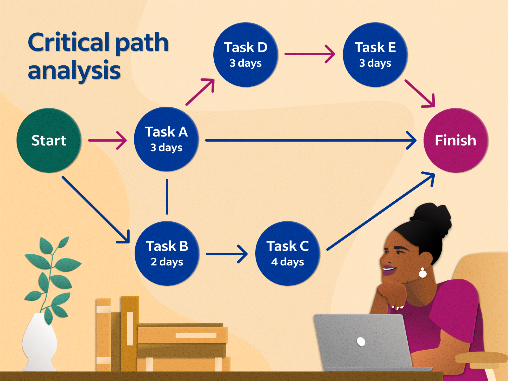

Redes Neuronales
Redes Neuronales

El modelo DUA se construye con las investigaciones en neurociencia relacionadas con las redes neuronales y la activación de ciertas zonas del cerebro a través de la realización de tareas que suponen demandas cognitivas.
Redes Afectivas

Son las especializadas en evaluar patrones y asignarles un significado emocional, determinan la implicación personal en las diferentes tareas y aprendizajes y con el mundo que nos rodea, por lo que se vinculan con el «porqué» del aprendizaje. Las acciones que se deben tomar para activar estas redes neuronales se les llama de implicación.
Redes de reconocimiento

Son las que se encargan de percibir los estímulos, están especializadas en el reconocimiento de la información y en asignar significados a los patrones que percibimos. Estas redes son las que nos permiten captar, reconocer e integrar la información y son fundamentales en las acciones que se realizan relacionadas con el «qué» del aprendizaje. Las acciones que se deben tomar para activar estas redes neuronales se les llama de representación.
Redes estratégicas

Son las especializadas en la generación y control de los patrones mentales y de acción, así como en las funciones ejecutivas. Están implicadas en poder hacer un plan o realizar una tarea, por lo que se relaciona con el «cómo» se produce y expresa el aprendizaje. Las acciones que se deben tomar para activar estas redes neuronales se les llama de acción y expresión.